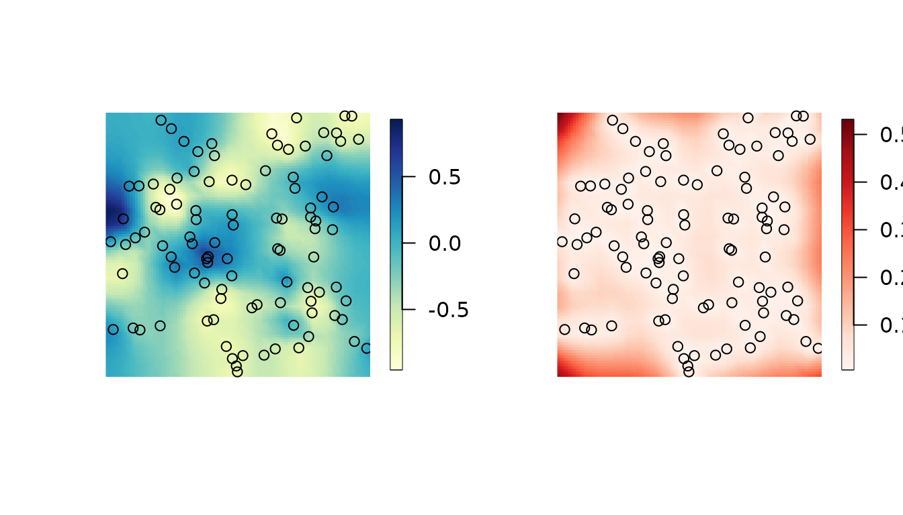
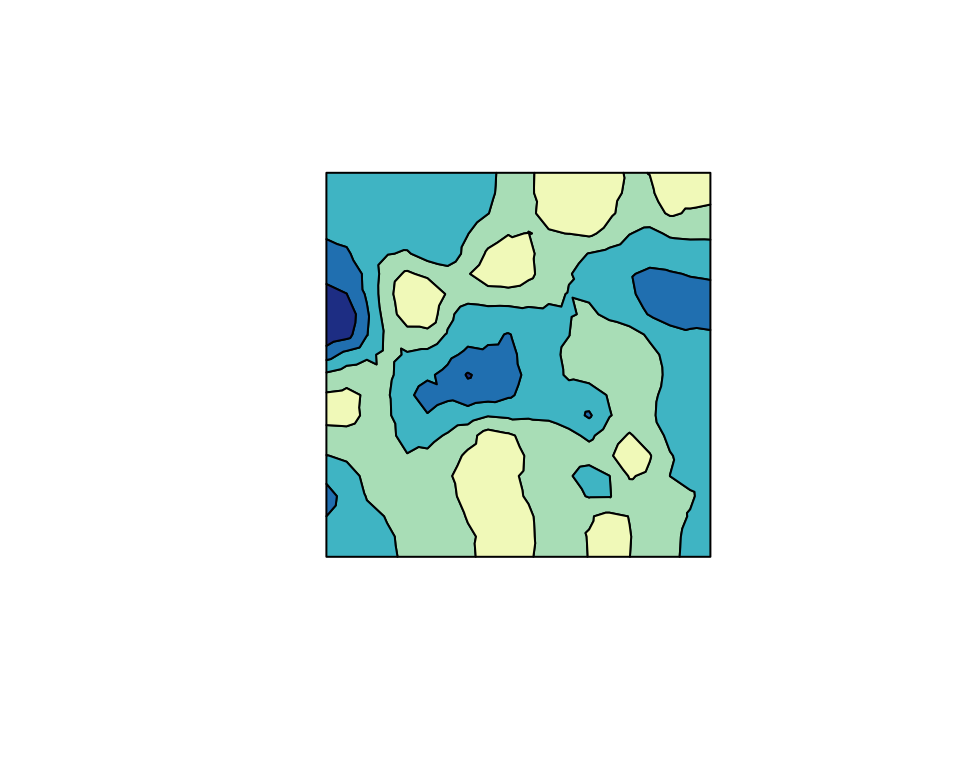
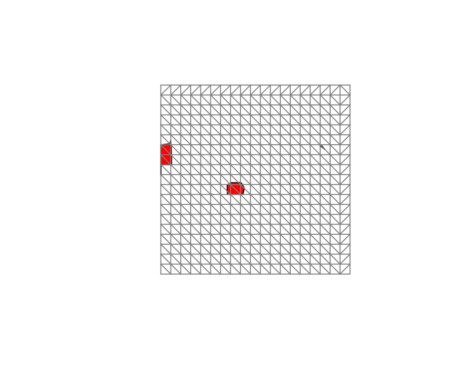
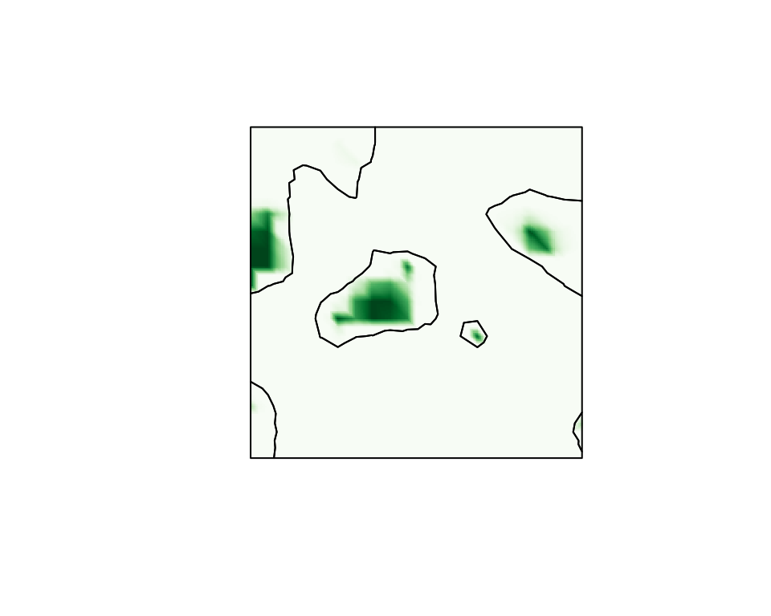

Calculating probabilistic excursion sets and related quantities using excursions
David Bolin and Finn Lindgren
Source:vignettes/excursions.Rmd
excursions.RmdThe functions in excursions can be divided into four
main categories depending on what they compute: (1) Excursion sets and
credible regions for contour curves, (2) Quality measures for contour
maps, (3) Simultaneous confidence bands, and (4) Utility such as
Gaussian integrals and continuous domain mappings. The main functions
come in at least three different versions taking different input: (1)
The parameters of a Gaussian process, (2) results from an analysis using
the INLA software package, and (3) Monte Carlo simulations
of the process. These different categories are described in further
detail below.
As an example that will be used to illustrate the methods in later sections, we generate data at some locations where is a Gaussian random field specified using a stationary SPDE model (Finn Lindgren, Rue, and Lindström 2011).
x <- seq(from = 0, to = 10, length.out = 20)
mesh <- inla.mesh.create(lattice = inla.mesh.lattice(x = x, y = x),
extend = FALSE, refine = FALSE)
spde <- inla.spde2.matern(mesh, alpha = 2)
obs.loc <- 10 * cbind(runif(100), runif(100))
Q <- inla.spde2.precision(spde, theta = c(log(sqrt(0.5)), 0))
x <- inla.qsample(Q = Q, seed = seed)
#> Warning in inla.qsample(Q = Q, seed = seed): Since 'seed!=0', parallel model is
#> disabled and serial model is selectedBased on the observations, we calculate the posterior distribution of
the latent field, which is Gaussian with mean mu.post and
precision matrix Q.post, these are computed as follows. We
refer to (F. Lindgren and Rue 2015) for
details about the INLA related details in the code.
A <- inla.spde.make.A(mesh = mesh, loc = obs.loc)
sigma2.e = 0.01
Y <- as.vector(A %*% x + rnorm(100) * sqrt(sigma2.e))
Q.post <- (Q + (t(A) %*% A) / sigma2.e)
mu.post <- as.vector(solve(Q.post, (t(A) %*% Y) / sigma2.e))The following figures show the posterior mean and the posterior standard deviations.
proj <- inla.mesh.projector(mesh, dims = c(100, 100))
cmap <- colorRampPalette(brewer.pal(9, "YlGnBu"))(100)
sd.post <- diag(inla.qinv(Q.post))
cmap.sd <- colorRampPalette(brewer.pal(9, "Reds"))(100)
par(mfrow=c(1,2))
image.plot(proj$x, proj$y, inla.mesh.project(proj, field = mu.post),
col = cmap, axes = FALSE,
xlab = "", ylab = "", asp = 1)
points(obs.loc[, 1], obs.loc[, 2])
image.plot(proj$x, proj$y, inla.mesh.project(proj, field = sd.post),
col = cmap.sd, axes = FALSE,
xlab = "", ylab = "", asp = 1)
points(obs.loc[, 1], obs.loc[, 2])
Excursion sets and contour credible regions
The main function for computing excursion sets and contour credible
regions is excursions. A typical call to the function looks
like
res.exc <- excursions(mu = mu.post, Q = Q.post, alpha = 0.1, type = '>',
u = 0, F.limit = 1)Here, mu and Q are the mean vector and
precision matrix for the joint distribution of the Gaussian vector
x. The arguments alpha, u, and
type are used to specify what type of excursion set that
should be computed: alpha is the error probability,
u is the excursion or contour level, and type
determines what type of region that is considered: ‘>’ for positive
excursion regions, ‘<’ for negative excursion regions, ‘!=’ for
contour avoiding regions, and ‘=’ for contour credibility regions. Thus,
the call above computes the excursion set
as introduced in Definitions and computational
methodology.
The argument F.limit is used to specify when to stop the
computation of the excursion function. In this case with
F.limit=1, all values of
are computed, but the computation time can be reduced by decreasing the
value of F.limit.
The function has the EB method as default strategy for handling the
possible latent Gaussian structure. In the simulated example, the
likelihood is Gaussian and the parameters are assumed to be known, so
the EB method is exact. The QC method can be used instead by specifying
method='QC'. In this case, the argument rho
should be used to also provide a vector with point-wise marginal
probabilities:
for positive excursions and contour regions, and
for negative excursions. In the situation when
is Gaussian but
is not, the marginal probabilities should be calculated under the
distribution
and mu and Q should be chosen as the mean and
precision for the distribution
where
is the MAP or ML estimate of the parameters.
The function has a version excursions.inla used to
analyze outputs of INLA, which is described further in the
INLA interface vignette.
The function excursions.mc can be used to post-process
Monte Carlo model simulations in order to compute excursion sets and
credible regions. For this function, the model is not specified
explicitly. Instead a
matrix X containing
Monte Carlo simulations of the
dimensional process of interest is provided. A basic call to the
function looks like
excursions.mc(X, u, type)where u again determines the level of interest and
type defines the type of set that should be computed. It is
important to note that this function does all computations purely based
on the Monte Carlo samples that are provided, and it does not use any of
the computational methods based on sequential importance sampling for
Gaussian integrals that the is the basis for the previous methods. This
means that this function in one sense is more general as X
can be samples from any model, not necessarily a latent Gaussian model.
The price that has to be payed for this generality is that the only way
of increasing the accuracy of the results is to increase the number of
Monte Carlo samples that are provided to the function.
Analysis of contour maps
The main function for analysis of contour maps is
contourmap. A basic call to the function looks like
res.con <- contourmap(mu = mu.post, Q = Q.post,
n.levels = 4, alpha = 0.1,
compute = list(F = TRUE, measures = c("P0")))Here, mu is again the mean value and Q is
the precision matrix of the model. The parameter n.levels
sets the number of contours that should be used in the contour map, and
these are spaced equidistant in the range of mu by default.
Other types of contour maps can be obtained using the type
argument. For manual specification of the levels, the
levels argument can be used instead. By default, the
function computes the specified contour map but no quality measures and
it does not compute the contour map function. If quality measures should
be computed, this is specified using the compute argument.
This argument is also used to decide whether the contour map function
should be computed.
As for excursions, this function comes in two other
versions depending on the form of the input:
contourmap.inla for model specification using an
INLA object, or contourmap.mc for model
specification using Monte Carlo simulations of the model. The model
specification using these functions is identical to that in the
corresponding excursions functions. See the INLA interface vignette for examples
using contourmap.inla.
Continuous domain interpretations
A common scenario is that the input used in contourmap
or excursions represents the value of the model at some
discrete locations in a continuous domain of interest. In this case, the
function continuous can be used to interpolate the
discretely computed values by assuming monotonicity of the random field
in between the discrete computation locations, as discussed in Definitions and computational methodology. A
typical calls to the function looks like
sets.exc <- continuous(ex = res.exc, geometry = mesh, alpha = 0.1)Here ex is the result of the call to
contourmap or excursions and
alpha is the error probability of interest for the
excursion set or credible region computation. The argument
geometry specifies the geometric configuration of the
values in input ex, either as a general triangulation
geometry or as a lattice. A lattice can be specified as an object of the
form list(x, y) where x and y are
vectors, or as list(loc, dims) where loc is a
two-column matrix of coordinates, and is the lattice size vector. If
INLA is used, the lattice can also be specified as an
inla.mesh.lattice object. In all cases, the input is
treated topologically as a lattice with lattice boxes that are assumed
convex. A triangulation geometry is specified as an
inla.mesh object. Finally, an argument output
can be used to specify what type of object should be generated. The
options are currently sp which gives a
SpatialPolygons object, and inla which gives
an inla.mesh.segment object.
Simultaneous confidence bands
The function simconf can be used for calculating
simultaneous confidence bands for a Gaussian process
.
A basic call to the function looks like
simconf(alpha, mu, Q)where alpha is the coverage probability, mu
is the mean value vector for the process, and Q is the
precision matrix for the process. The function has a few optional
arguments similar to those of excursions, all listed in the
documentation of the function. The function returns upper and lower
limits for both pointwise and simultaneous confidence bands.
As for excursions and contourmap, there is
also a version of simconf that can be used to analyze
INLA models (simconf.inla) and a version that
can analyze Monte Carlo samples (simconf.mc). Furthermore,
there is a version simconf.mixture which is used to compute
simultaneous confidence regions for Gaussian mixture models with a joint
distribution on the form
This particular function was used to
analyze the models in (Bolin et al. 2015)
and (Guttorp et al. 2014), but is also
used internally by simconf.inla.
Gaussian integrals
Among the utility functions in the package, the function
gaussint can be especially useful also in a larger context.
It contains the implementation of the sequential importance sampling
method for computing Gaussian integrals, described in Definitions and computational methodology. This
function has two features that separates it from many other functions
for computing Gaussian integrals: Firstly it is based on the precision
matrix of the Gaussian distribution, and sparsity of this matrix can be
utilized to decrease computation time. Secondly, the integration can be
stopped as soon as the value of the integral in the sequential
integration goes below some given value
.
If one only is interested in the exact value of the integral given that
it is larger than some value
,
this option can save a lot of computation time.
A basic call to the function looks like
gaussint(mu, Q, a, b)where mu is the mean value vector, Q is the
precision matrix, a is a vector of the lower limits in the
integral, and b contains the upper integration limits. If
the Cholesky factor of Q is known beforehand, this can be
supplied to the function using the Q.chol argument. An
argument alpha is used to set the computational
limit for the integral. The function returns an estimate of the integral
as well as an error estimate. If the error estimate is too high, the
precision can be increased by increasing the n.iter
argument of the function.
Plotting
The excursions package contains various functions that
are useful for visualization. The function tricontourmap
can be used for visualization of contour maps computed on triangulated
meshes. The following code plots the posterior mean using the contour
map we previously computed.
set.sc <- tricontourmap(mesh,
z = mu.post,
levels = res.con$u)
plot(set.sc$map, col = contourmap.colors(res.con, col = cmap))
Here contourmap.colors is used to find appropriate
colors for each set in the contour map, based on the color map
cmap that was defined using the RColorBrewer
package. The estimated excursion set can be visualized as
plot(sets.exc$M["1"], col = "red",
xlim = range(mesh$loc[,1]),
ylim = range(mesh$loc[,2]))
plot(mesh, vertex.color = rgb(0.5, 0.5, 0.5),
draw.segments = FALSE,
edge.color = rgb(0.5, 0.5, 0.5),
add = TRUE)
The second plot command adds the mesh to the plot so
that we can see how the set is interpolated by the
continuous function. Finally, the interpolated excursion
function
,
can be plotted easily using the inla.mesh.projector
function from the INLA package.
cmap.F <- colorRampPalette(brewer.pal(9, "Greens"))(100)
proj <- inla.mesh.projector(sets.exc$F.geometry, dims = c(200, 200))
image(proj$x, proj$y, inla.mesh.project(proj, field = sets.exc$F),
col = cmap.F, axes = FALSE, xlab = "", ylab = "", asp = 1)
con <- tricontourmap(mesh, z = mu.post, levels = 0)
plot(con$map, add = TRUE)
The final two lines computes the level zero contour curve and plots it in the same figure as the interpolated excursion function.